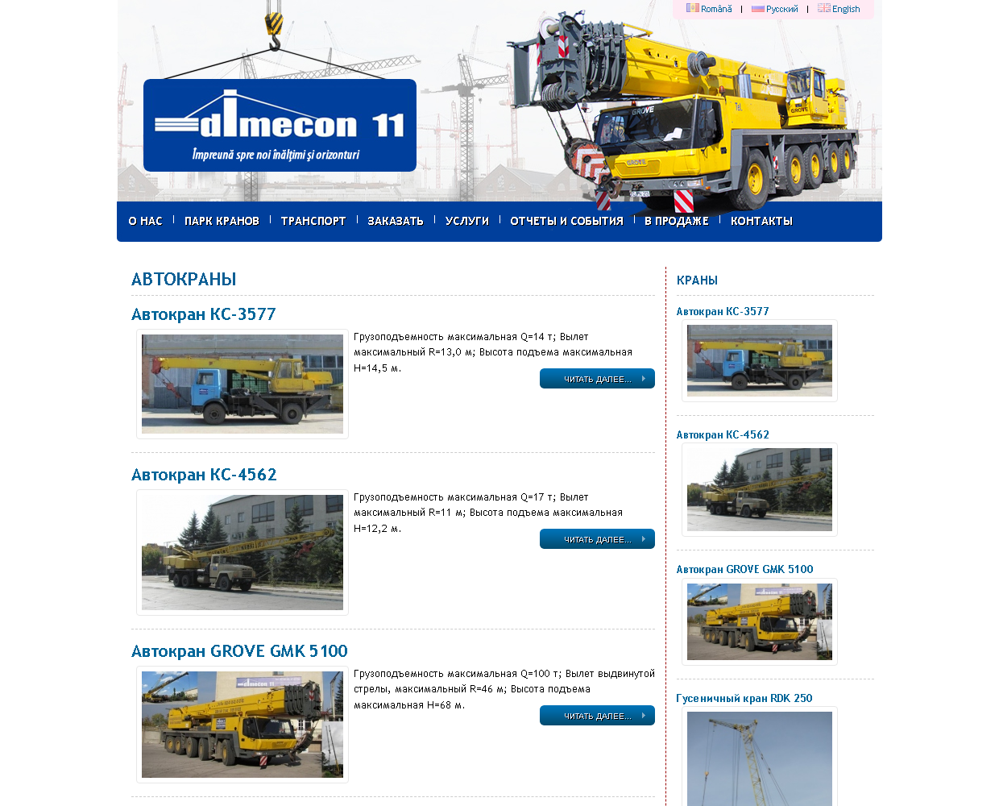
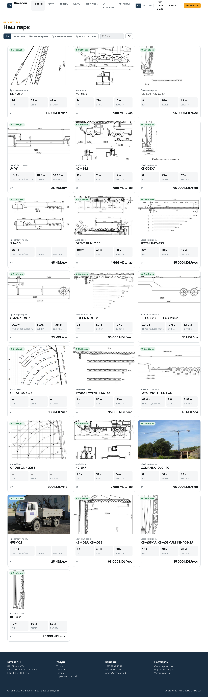
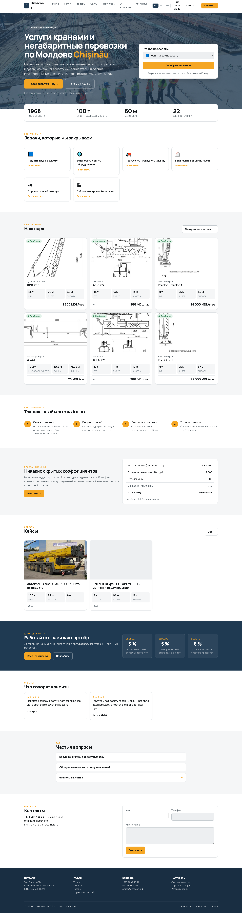
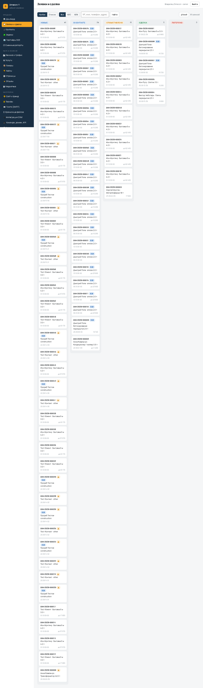
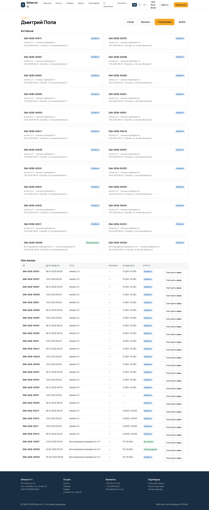
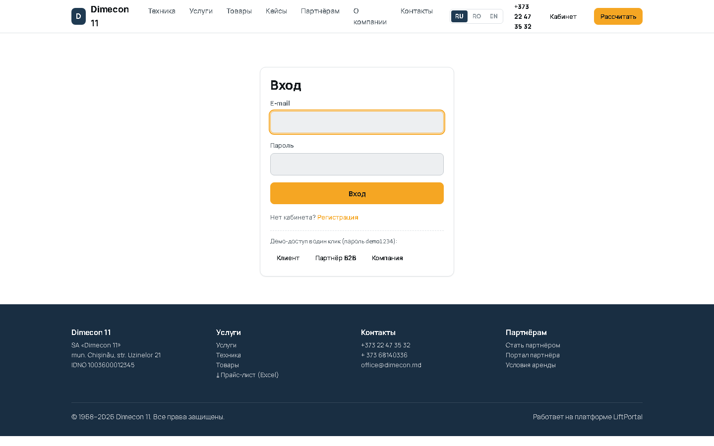
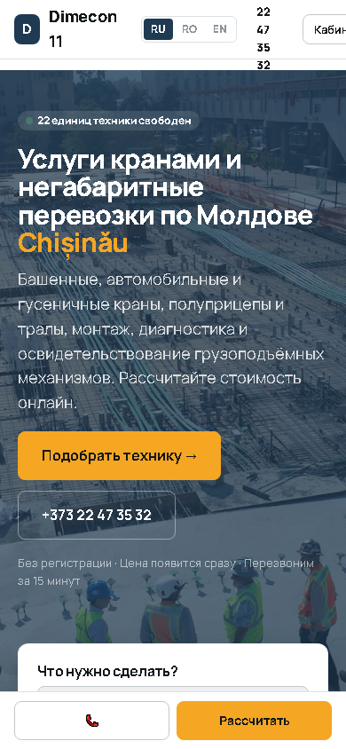

6 / 20
Подбор без технических терминов
Клиент не обязан знать, что такое вылет стрелы: он выбирает ситуацию по картинке, система считает сама.

Сайт, онлайн-подбор, CRM и портал партнёров для SA «Dimecon 11»
Демонстрация рабочей системы · 19.09.2026
Действующий сайт dimecon.md перенесён целиком. Языковые версии исходного сайта расходились — в русской было видно 3 автокрана из 22. Теперь весь парк доступен на всех языках.
Вёрстка не адаптивная, нет цен и фильтров, каталог виден не полностью.

Реальные фотографии и паспортные данные, ставки, доступность на дату, фильтры по грузоподъёмности.

Первый экран с быстрым подбором, парк, шаги работы, прозрачные цены, кейсы, блок для подрядчиков.

Клиент не обязан знать, что такое вылет стрелы: он выбирает ситуацию по картинке, система считает сама.
Два-три варианта техники, доступность на дату, вилка цены и объяснение, почему подходит именно эта машина.

Клиент видит каждую составляющую до оформления: работа, подача, стропальщик, коэффициенты, НДС.

При тяжёлом грузе, работе у ЛЭП или на высоте система не выдаёт машину сама, а передаёт заявку инженеру.

Заявки, воронка, ближайшие подачи, эскалации и рапорты, ожидающие подтверждения — на одном экране.

Заявки с сайта, из портала и по телефону в одной воронке; карточка переносится мышью.

График на две недели: заказы, мягкие брони и техобслуживание. Конфликты видны сразу.

Объекты, заявки из шаблона, договорные ставки, сменные рапорты на подтверждение, счета и лимит.

Клиент видит свои заказы, подрядчик — свои объекты и график, компания — CRM и парк, платформа — все компании. Чужое закрыто: проверено отдельным актом.

Подтверждение, КП, счёт, акт и сменный рапорт в PDF: реквизиты, НДС, сумма прописью, условия отмены.

Прайс-лист, реестр заявок, табель смен, документы, парк с грузовыми таблицами — для бухгалтерии и партнёров.

Импорт из любой CRM файлом, обмен с OfficePlus по Partner B2B API, чтение контрагентов из Oracle ERP.

Сайт и подбор рассчитаны на мобильный: один вопрос на экран, кнопка звонка всегда под рукой.

Полный набор автоматических проверок: расчёты сверены с ручным счётом, документы прочитаны обратно, изоляция данных между компаниями подтверждена. Подробности — в восьми актах тестирования.